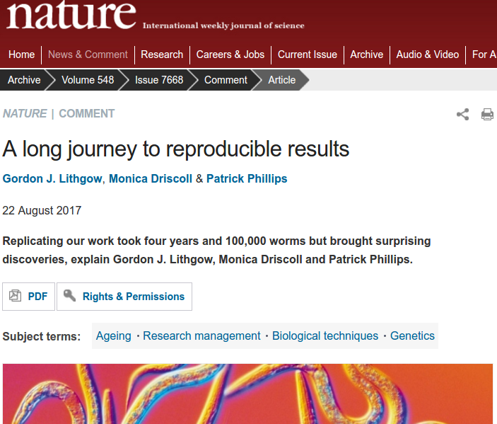
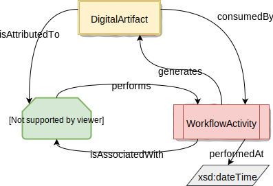

Linkflows
Enabling a web of linked semantic publishing workflows
Linkflows
Enabling a web of linked semantic publishing workflows
Cristina-Iulia Bucur
19 March 2018@ICT.OPEN
These slides: https://goo.gl/WbfuyoAbout Linkflows
- PhD project started in February 2017
- Supervisors: Tobias Kuhn, Davide Ceolin, Lora Aroyo
- Collaborations:
- Vrije Universiteit Amsterdam
- IOS Press
- Netherlands Sound and Vision
Why Linkflows?
- Scientific publishing: effective means to share information and knowledge
- Shift towards the digital environment
- New ways to represent fine-grained knowledge
- Linked Data: enable the exchange, reuse and linking of data on the Web
Challenges
Challenges: Reproducibility

Challenges: Reproducibility
Challenges: "Knowledge Burying"
 |
More than 40% of information lost from publishing to mining RIP (Rest in Paper) knowledge Need to preserve information about the processes |
Challenges: Digital Publishing
- Semantic Web, Linked Data
- Understandable content for both humans and machines
- SPAR ontologies: Semantic Publishing and Referencing Ontologies
- Fine-grained interconnected parts of knowledge; e.g. nanopublications
Challenges: Digital Publishing
- Semantic Web, Linked Data

Shift from "linear" publications
Digital artifacts: text, datasets, code, figures, slides, spreadsheets, multimedia objects, methods, protocols, results and reviews, annotations, etc.
Scientific workflows: how digital artifacts are consumed and produced
Challenges: Quality assessment
- A new way of assessing the quality of scientific publications
- Debatable and bias-able indicators; e.g. Journal Impact Factor

Challenges: Descentralization
- No control of a central authority anymore; e.g. publishing house
- Descentralization of content; e.g. academic peer-to-peer networks

Challenges
- Reproducibility
- "Knowledge Burying"
- Digital publishing
- Quality assessment
- Descentralization of content
Focus
How can scientific workflows that produce and consume digital artifacts be assessed, linked and descentrally executed across platforms, such that individual steps of a single workflow can be distributed?Approach
- Develop a simple model for linked workflows - linkflows
- Choose sample articles from IOS Press and Netherlands Sounds and Vision
- Instantiate model with sample articles
- Use Linked Data Notifications (LDNs) for descentralized execution
Linkflows

Model instantiation with example paper